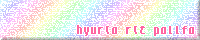

Links
普段お世話になっているPMS関連のサイトを紹介します。(敬称略。悪しからずお願いします)
PMS関連のサイトであれば出来る限り掲載します。もし足りないサイトを発見したら Links - PMS Database アンケート会場 にお知らせください。
当サイトはリンクフリーです。
目次
・ 関連性の高いサイト
・ PMS関連イベント
- PMS差分企画
- 合同企画・その他 (7keys等の差分も含まれます)
・ 難易度表
- 主要な難易度表
- 個人の難易度表
- その他の難易度表
・ よくPMS差分を同梱されているBMS作家さんのサイト
・ PMS差分公開サイト
- 共同アップローダー
- 個人サイト
・ その他
- スキン関係
- スキン関係 (ぽみゅキャラ)
- 差分制作関連ツール
- その他のツール
- IR / Repository
- データベース
- フォーラム
- 資料、面白い記事など
| 関連性の高いサイト ▲目次へ | |
|---|---|
| PASTORAL(UPPER) - 発狂PMS難易度表 for beatoraja (新サイト) | つきやま氏の発狂PMS難易度表です。2017/04～ 更新停止となっていました (旧サイト) が、2023/07～ 更新再開 beatoraja 基準にリニューアルして更新再開されました。(新サイト) |
| シュレーディンガーの猫 - PMS難易度表まとめサイト (旧サイト) | |
| Mocha-Repository (beatoraja 本体配布もこちら) | FULLHD、多様なオプション、本家仕様の判定などが魅力的な次世代BMSプレイヤー「beatoraja」とその代表的なインターネットランキングです。PMS Database では、これから完全新規でPMSに触れる方にはこちらを推奨しています。 |
| LR2 internet ranking (Internet Archive) | 【サイト閉鎖】 (2026/05/31) LR2IR の閉鎖に伴い、Internet Archive に置換しました。*現在稼働中の代替サーバーや魚拓サービスについての詳細は、リンク集下部 その他 > IR / Repository をご確認ください。 |
| PMS導入ガイド (2023年版) (LR2 / beatoraja 共通) | これからPMS環境を構築したい方に向けたガイド記事です。PMS導入ガイド (2023年版) の制作にあたっては、西ヶ蜂さん、propeller さんの過去の解説記事をおおまかに統合させていただきました。細かい仕様や解説が知りたい場合は、相互に参照されると良いかもしれません。 |
| 発狂PMS導入ガイド (LR2向け) | |
| 発狂PMS導入方法 完全版（beatoraja 向け） | |
| 【発狂PMS】beatoraja/LR2仕様比較まとめ （beatoraja0.8.7対応） | LR2 / beatoraja (9keys) のゲージ・判定システムに関する詳細な解説です。特に beatoraja の 9keys モードは、7keys をはじめとする 他プレイスタイルと大きく異なるシステムが実装されています。SP→PMSに移行してきた場合など ゲームに明るい方であっても、念のため一読をオススメします。 |
| BeMusicSeeker Unofficial Fork (LR2/beatoraja 共通) | 難易度表の管理、BMS格納ディレクトリの整理、差分導入先推定などを行ってくれる主流のBMS総合管理ツールです。詳細は マニュアル を参照してください。(2026/06) これまで LR2 の連携が必要なアプリでしたが、beatoraja の運用を踏まえたスタンドアローン化、データベース読み込み高速化などの改善が加わった BeMusicSeeker Unofficial Fork 版がリリースされました。オリジナル版の機能も踏襲されているので、これから新しく導入される方はフォーク版がオススメです。 |
| BeMusicSeeker (オリジナル版・LR2向け) | |
| PMS関連イベント ▲目次へ | |
| PMSパッケージ企画「Toy Musical」シリーズの特設ページです。データベースでは「TM」「TM2」の略記を使用しています。 | |
| PMSパッケージ企画 Colorful Canvas(CC) / Colorful Channel(CC2) の特設ページです。 | |
| 2020/04 に開催された5年ぶりのPMSイベントです。データベースでは「S9B2020」の略記を使用しています。 | |
| Y.W.氏主催のPMSイベント(全4回)です。データベースでは「S9R2011」「S9F2012」「A9S2013」「W9S2015」の略記を使用しています。 【注意】追加差分の都合により、こちらのミラーからのダウンロードを推奨します。 (追記) 2021/06/06 ミラーのURLを更新しました(保管中) | |
| 2004年に開催された(初めて？)のPMSイベントです。(Internet Archive 参照) | |
| PMS差分企画 ▲目次へ | |
| BOFPMS差分企画(2013-) | 大型BMSイベント THE BMS OF FIGHTERS (BOF) に合わせたPMS差分パッケージ企画です。本体BMSはTorrent等を用いて各自入手し、差分パッケージを統合してください。 |
| TM非公式パック(1~3) | PMS難易度表会場の【その他（預かり物）】欄にあります。1~3それぞれDLして解凍し、TM・TM2の本体パッケージにそれぞれ統合してください。 |
| 新春PMS差分作者仮装大賞 | 2015年に開催された、共通の課題曲を使用した偽名PMS差分企画です。 |
| 2004年に開催された、キューキービーツの登録曲やその他いろいろなBMSからPMS譜面を作成する差分企画です。(Wayback Machine 使用) | |
| PABAT! PMS Append | 2013年に開催された韓国のBMSイベント PABAT! (PABAT! 2013 seasons) のパッケージに統合する形式のPMS差分企画です。(保管中) |
| 合同企画・その他 (7keys等の差分も含まれます) ▲目次へ | |
| PABAT! 2014 Append Package | 2014年以降恒例となっている、PABAT! パッケージに統合する形式の差分企画です。(7keys等の差分も含まれます) |
| PABAT! 2015 Append Package | |
| PABAT! 2016 Append Package | |
| PABAT! 2017 Append Package | |
| Luminous - gateway | 2015年に配布された、日韓合作のBMSパッケージです。「Luminous」「Luminous - Pure White」の2種があり、それぞれにパッケージ版オリジナルのPMS譜面が同梱されています。 |
| 合同差分作成企画 | 奈那樹さん主催の差分企画です。共通のお題曲に対して差分を作成する形式で、PMS差分もたくさん含まれています。(本体BMSは各自で入手してください) |
| BOF2012 Append package | BOF2012のパッケージに統合する形式の差分パッケージです。 |
| Sunset | 2025年より開催中のコンピレーション企画で、リリースにあたって制作された追加差分パッケージの中に PMS差分がたくさん含まれています。 |
| 9鍵のフリーゲーム Toy Musical 3 の公式ページです。付属のナナシグルーヴ2 を使用してプレイでき、遊べば遊ぶほど曲が増えていく解禁システムが充実しています。攻略wiki はこちら。(PMS と異なるフォーマットで開発されているため、PMS Database では原則として扱いません。おのが目で確かめよう！) | |
| 難易度表 ▲目次へ | |
| 主要な難易度表 ▲目次へ | |
| 発狂PMS難易度表 for beatoraja | 【更新停止中】 レベル46中(●1)以上のPMS差分を20段階に区分けした投票式の難易度表です。2023/07 beatoraja 向け難易度表として更新が再開されましたが、2025/07～ 現在は更新停止となっています。 |
| 発狂PMS難易度 (LR2向け / 旧難易度表) | 【更新終了】～2017/03 LR2 基準で運営されていた旧難易度表です。当時の姿を見たい方向けに当サイトでアーカイブしました。Stairway にはプレイヤーデータの統計も残っているので、併せて活用してください。 |
| 発狂PMS表外案内所 | 【更新終了】 本表以外の高難易度PMS譜面を可能な限り収集していた難易度表で、元祖 PMS Database というべきものです。つきやま氏を中心に査定もされていて、本表と同じく20段階(+隔離)で登録されています。 |
| 準発狂PMS難易度表 | 【更新終了】 当時公開されていたPMSパッケージの同梱譜面について、レベル40-45 の範囲にあるものを ○1-6 に再仕分けした難易度表です。いわば中級者さん向けのスターターセットのような位置付け。〇数字と本家譜面の換算には こちら を参照すると直感的かもしれません。 |
| 個人の難易度表 ▲目次へ | |
| obj.010m010難易度表 | obj.010m010 |
| Kranich差分一覧表 (Internet Archive) | 【サイト閉鎖】 obj.Kranich |
| 霧中の蒼鳥 - PMS差分難易度表 | obj.misty.ls04 |
| おんまこPMS難易度表 | obj.onmaco |
| 酸素PMS難易度表 (Internet Archive) | 【サイト閉鎖】 obj.oxygen |
| Rominabyss差分 | obj.Rominabyss |
| おさとう難易度表 | obj.sugar |
| obj.Takanashi | obj.Takanashi |
| ymskぷむす難易度表 | obj.ymsk |
| サンゴ三号さんのPMS難易度表 | obj.サンゴ三号さん |
| 西ヶ蜂難易度表 | obj.西ヶ蜂 |
| その他の難易度表 ▲目次へ | |
| PMS通常難易度表 | 【更新終了】 旧発狂PMS難易度表サイトで扱われていなかった譜面の集合で、2017/06 以降、PMS Database で一元化させて頂きました。各サイトは当時を振り返るための資料としてご利用いただければと思います。 |
| 発狂PMS見てない難易度(仮) | |
| BOF関連難易度表 (2013-2016) | |
| たんぱつ難易度表 | 【更新終了】 旧発狂PMS難易度表サイトで秘密裏(?) に稼働していた「レベル0がトイなんとかと同じくらい(●10~11) の Overjoy コンセプト表」の素案で、本表・表外案内所・BOF差分企画からの抜粋です。 |
| LNPMS難易度 | LNが大きくクリアに関わるものや、LNの練習に有効そうな譜面をまとめた難易度表です。 |
| Khibine さんの運営されているPMS難易度表です。 | |
| ExtraS乱の部屋 | LR2 の高難易度オプション EXTRA MODE を使った地力上げ用の難易度表案です。EXTRA MODEの詳細は こちら を参照してください。 |
| 発狂PMS乱ノック難易度表(仮) | 地力上げ用の難易度表案です。 |
| よくPMS差分を同梱されているBMS作家さんのサイト ▲目次へ | |
| www.likeside.net | FALLさん |
 | fetherさん |
| とびのさび (Internet Archive) | 【サイト閉鎖】 Frost_Shrikeさん |
| Holidra.Kさん | |
| endless music -official site- | Is-mさん |
| kamisakaさんのBMS置き場 | kamisakaさん |
| mots | 自作bms置き場 | motsさん |
| NASAの物置 | NASAさん |
| otokazさん | |
| BMS @ U.P. (Internet Archive) | 【サイト閉鎖】 U.P.さん *2026/06 現在も利用可能な 公式ミラー配布所 |
| umeさん | |
| Y.Wさん | |
| yamajetさん | |
| Yosk!のBMSページ | Yosk!さん |
| お下げ | お下げさん |
| しっぽの交差点 | かげろー (kagerow) さん |
| +++ LuzeriA +++ | ルゼさん |
| 東風屋 梓さんのBMS置き場 | 東風屋 梓さん |
| Eternity ～end of life～ | 夢幻 海さん |
| PMS差分公開サイト ▲目次へ | |
| 共同アップローダー ▲目次へ | |
| absolute - 高難易度BMS差分アップローダー | 【サービス終了】 黒猫列車さんの運営されていたアップローダーです。PMS差分は主に 高難易度BMS差分アップローダー > その他 にアップされています。(2026/04) land.to サービス終了 に伴い、DARKSABUN さんのミラーサイトに更新しました。 |
| BMS差分アップローダー (GNQG) | 【サービス終了】absolute さんのストレージから乗り換える形で主流となっていたアップローダーです。(2024/12) Rental Orbit Space サービス終了 に伴い、ひとまずサイトへのリンクを Internet Archive に置換しました。暫定再配布所：(公式再配布パッケージ版 No.1-6370) / (非公式ミラー No.1-6414) / (No.6415-) / (PMS関連のみ 非公式ミラー) |
| Stella Uploader | Stella 難易度表サイトで運営されているアップローダーで、2026/06 現在も稼働している主流のアップローダーで、9keys の投稿や絞り込みに対応しています。また、非ログイン、匿名での投稿も許可されています。 |
| PMSwiki | PMS関連の情報をまとめていたwikiです。更新停止状態ですが、過去の差分企画で投稿されたPMSはダウンロード可能です。 |
| 個人サイト ▲目次へ | |
| obj.010m010難易度表 | obj.010m010 |
| 0samil0さんの差分まとめ (Google Drive) | obj.0samil0 |
| 朧雑記帳[980円] (Internet Archive) | 【サイト閉鎖】 obj.980円の人 |
| obj.agu | obj.agu |
| wax work | obj.akusil |
| aquabitさんの差分置き場 | obj.aquabit |
| C4さんの差分置き場 | obj.C4 |
| こたさんの差分置き場 | obj.cota3 |
| こっとんの差分置き場。 (Internet Archive) | 【サイト閉鎖】 obj.cotton *サイト内部の OneDrive 配布所は機能していますが、OneDrive 自体の接続が不安定な状況を考慮し、暫定的な 非公式ミラー を作成させて頂きました。 |
| 俄なctcのBMSよろず | obj.ctc |
| どしの差分部屋 | obj.Dossy |
| 2×3×4 | obj.hi-low |
| ippi@さんの差分置き場 (OneDrive) | obj.ippi@ *OneDrive の接続が不安定な状況を考慮し、暫定的な 非公式ミラー を作成させて頂きました。 |
| JHSさんの差分置き場 (GoogleDrive) | obj.JHS |
| 訴訟系差分置き場 | obj.jinshin / さしえる *サイト自体は機能していますが、一部配布所にあてられている OneDrive の接続が不安定な状況を考慮し、暫定的な 非公式ミラー を作成させて頂きました。 |
| 訴訟差分置き場 | obj.JLS |
| joukalさんの差分置き場 (GoogleDrive) | obj.joukal |
| kamisakaさんの差分置き場 (OneDrive) | obj.kamisaka *OneDrive の接続が不安定な状況を考慮し、暫定的な 非公式ミラー を作成させて頂きました。 |
| kitsuneさんの差分置き場 (MEGA) | 【サイト閉鎖】 obj.kitsune |
| Kranichさんの差分置き場 | obj.Kranich |
| ガリゴリアペンド (Internet Archive) | 【サイト閉鎖】 obj.KSCN |
| LAPIS TABLE | obj.LAPIS |
| ブウのPMS差分まとめ (dropbox) | obj.M.B |
| Mateyさんの差分まとめ (Google スプレッドシート) | obj.Matey |
| 謎 | obj.MGN |
| miasikさんのHP | obj.miasik |
| 霧中の蒼鳥 | obj.misty.ls04 |
| M系 | obj.mkst |
| MOK2のLN差分置き場 | obj.MOK2 |
| nmkさんの差分置き場 (OneDrive) | obj.nmk *OneDrive の接続が不安定な状況を考慮し、暫定的な 非公式ミラー を作成させて頂きました。 |
| おんまこPMS難易度表 | obj.onmaco |
| 雑雑横丁 (Internet Archive) | 【サイト閉鎖】 obj.oxygen |
| 適当にうｐろだ | obj.Pearl-C. |
| Rominabyss差分 | obj.Rominabyss |
| PMS譜面置き場 | obj.sepia.tk |
| Seriさんの差分まとめ (Internet Archive) | 【サイト閉鎖】 obj.Seri *LR2IR の閉鎖に準じたものです。ダウンロードリンクの実体は axfc uploader のため統一が難しく、PMS Database 各表から都度DLするのが無難と思われます。 |
| 発狂PMS 北極差分基地 | obj.sirokuma |
| sugarさんの差分置き場 (OneDrive) | obj.sugar *OneDrive の接続が不安定な状況を考慮し、暫定的な 非公式ミラー を作成させて頂きました。 |
| obj:Takanashi | obj.Takanashi ※一部リンク切れしているもののみ 一括保管 しました。 |
| werewolfさんの差分置き場 | obj.werewolf |
| ymskのぷむす関連置き場 | obj.ymsk |
| Yosk!のBMSページ (旧サイト) | obj.Yosk! ※PMS差分のみ一括パッケージ |
| ◎ s u g a r l e s s c a t | obj.あ / Forbidden / 2y |
| サンゴさんの差分まとめ(Google スプレッドシート) | obj.サンゴ三号さん |
| ただの音ゲーマー紫桜のブログ | obj.しざくら |
| 差分PMSファイル置き場 | obj.しゅ～ちゃん。 |
| 差分まとめたりなんかしてみたいなって思う | obj.つきやま / 鷹武 (他代理公開・案内あり) |
| 物置 | obj.る～こと |
| ただのゲーム日記？ | obj.枝豆 |
| 深海さんの差分置き場 (OneDrive) | obj.深海 *OneDrive の接続が不安定な状況を考慮し、暫定的な 非公式ミラー を作成させて頂きました。 |
| ダーマ神殿 | obj.西ヶ蜂 |
| 大原みちるさんの差分置き場 (dropbox) | 【サイト閉鎖】 obj.大原みちる ※一括保管 |
| 東風屋 梓さんの差分置き場 | obj.東風屋 梓 |
| ひ | obj.秘密 |
| ゆめるさぶん | obj.夢瑠 |
| шさんの差分置き場 (dropbox) | obj.ш |
| その他 ▲目次へ | |
| スキン関係 ▲目次へ | |
| スキン一覧 - BMSまとめ @wiki | (LR2/beatoraja) 現在入手できるスキンがまとまった、有志による情報ハブです。 |
| 9鍵関連スキン/差分まとめ(避難所) (Google スプレッドシート) | (LR2/beatoraja) 各種スキンの中でも特にPMS環境向けの情報を集めた有志まとめです。既存のスキンに上書きする差分パッチの配布情報もありますので、より細かいカスタマイズを加えたい方は参考にしてください。また、情報の追加も歓迎です。 |
| LR2 Skin - 霧中の蒼鳥 (Light Pop EX) | (LR2) PMS環境向けのハイスタンダードなスキンとツールが揃っており、特にプレイスキンの Light Pop EX は非常に多くの方に愛用されています。詳細なオンラインマニュアルも公開されていますので、LR2で環境構築を検討している方はまずこちらを参照頂くのがオススメです。 |
| (LR2) KOZiRO氏製作のPMSプレイ用スキンです。上記 Light Pop EXはこちらのスキンを基に機能拡張されたものとのこと。 | |
| Endless Circulation : Self Evolution | (LR2) あおいりっく氏制作のPMSスキンです。BMS パッケージ "Luminous" シリーズの特設サイトで配布されています。 |
| OVER ACTiVE DX 9key改 (axfc) | (LR2) 980円の人が製作された7keys風のプレイスキンです。 OVER ACTiVE DXを基に作成されているので、そちらの名前に馴染みの深いBMSerさんには相性がいいかもしれません。(動画) |
| REMI-PMS (dropbox) | (LR2) BMSスキンのREMI-Sを基に製作されたプレイスキンです。14keysっぽい見た目になるようです。(動画) |
| Girlish Cafe | (LR2) PMSとSPの中間的なレイアウト、ポップでかわいいデザインが特徴的なスキンです。詳細はURLのスクリーンショットへどうぞ。 |
 | (beatoraja) FHD, Lua製のモダンなデザインと表示機能の備わった新しいプレイスキンで、5/7keys 譜面を 9keys のプレイ画面で遊ぶことのできる差分スキン (いわゆる 7to9) も同梱されています。2026/06 現在、PMS Database ではこれから新しく環境構築する方にはこのスキンをオススメしています。特設記事内には他スキンからの乗り換えを想定した推奨オプションについてのコラムもありますので、興味のある方はぜひ一読ください。 |
| LITONE5 | (beatoraja) 現在最もメジャーな beatoraja 用プレイスキンの1つです。ただ、公式の配布が停止しており、それに伴って beatoraja のアップデートのたび少しずつバグが増えている状況でもあります。長期的な視点で考えて、 PMS Database では上記 Peaceful Play の利用をオススメしています。 |
| simple-7keys (simple-9keys) | (beatoraja) コンセプト通りのシンプルなスキンですが、ノートオブジェクトのクオリティが高くてよく馴染みます。背景やマスコットを自由に変更したり、7keys スキンのノートを 9keys と入れ替えることで、いわゆる 7to9 オプションのような遊び方もできる元祖スキンです。 |
| DotPop | (beatoraja) 4K画質まで対応したPMSプレイスキンセットです。 |
| ModernChic | (beatoraja) 最新版の beatoraja にデフォルトで搭載されているフルセットスキンです。 |
| Endless Circulation P-Play for beatoraja | (beatoraja) Endless Circulation の beatoraja 用最適化・高解像度版スキンです。 |
| Light Pop EX-B | (beatoraja) Light Pop EX の beatoraja 用最適化スキンです。 |
| beatorajaにカスタムスキンをインストールする - Hatena Blog | (beatoraja) LR2用スキンを beatoraja で流用できるようにコンバートする方法が紹介されている記事です。とりあえず乗り換えたい方向け。(2026/06 beatoraja 0.8.8 現在) lr2skin との互換性がない仕様が少しずつ増えており、どのような動作不良が発生するかわからない状況です。将来的には lua 製スキンへの乗り換えをオススメします。 |
| スキン関係 (ぽみゅキャラ) ▲目次へ | |
| Pomyu Chara Archive | (beatoraja) ポップン風のアニメーションキャラクター「ぽみゅキャラ」のデータベースと再配布です。 |
| CHPEditor | ぽみゅキャラを作成するためのツールです。 |
| CHP Format | 上記 CHPEditor の仕様解説、利用方法のガイドラインです。 |
| 差分制作関連ツール ▲目次へ | |
| iBMSC (オリジナル版) | 代表的なBMSエディタの1つで、機能が追加された派生バージョンがいくつか存在します。PMS Database では、これから初めて差分制作に挑戦してみようという方向けにはこちらのエディタをまずオススメしており、中でも PMS 向けのサポートが充実している pBMSC または安定性の高い uBMSC (v3.5.0-) を推奨しています。 使い方は PMS導入ガイドの当該記事 などをご覧ください。 |
| pBMSC (フォーク版 / 多機能) | |
| uBMSC (v3.5.0-) (フォーク版 / スタンダード) | |
| 62uBMSC (v3.5.1.1) (フォーク版 / 62進数BMSの制作用) | |
| BMSE (オリジナル版) | 代表的なBMSエディタの1つです。BMSE (フォーク版) はよりモダンなBMS制作のための改良版で、これから使ってみようと検討している方にオススメです。導入の流れや使い方については BMSE Helpを、9keys 独自の操作については、こちらの記事 を参考にしてください。 |
| BMSE (フォーク版 / uBMSC 準拠相当の実装および 62進数BMSへの対応) | |
| BmsMaker3 | 2026年現在、恐らく最もモダンで、今後の主流になっていくのではないかと思われるBMSエディタもとい「オールインワン型BMS制作補助ツール」です。非常に詳しい オンラインマニュアル のほか、Discord コミュニティで質問や要望を投げることもできます。(2026/06) PMS Database では 既存の解説記事 との兼ね合いや筆者自身の知見不足によりこれ以上積極的に推せませんが、意欲のある方はぜひお試しいただきたいと思います。 |
| BmsONE | beatoraja で再生可能な次世代型フォーマット "BMSON" 形式のファイルで譜面制作を行うためのエディタです。操作方法は同梱の readme テキストを参照してください。 |
| mBMplay | 高機能なプレビュー用 BMS/PMS プレイヤーで、BMSエディタに紐づけて、配置中の譜面をその場再生するのに使います。 (2020/09) PMS Database では、これから譜面制作環境を導入する方にはこちらをオススメしています。 |
| PMSee-V (Internet Archive) | 【サイト閉鎖】 桜為小鳩さん製作のPMSプレイヤーです。 |
| 自作ツール置き場 (PMS譜面ミスチェッカーほか) | DA-SUさん制作のニッチなPMS関連ツール集です。中でも「PMS譜面ミスチェッカー」は、無理押しの有無・PMS未使用レーンへの配置などの 9keys 特有のミスを洗い出してくれる必携ツールとなっています。(2022/01) PMS譜面ミスチェッカーに重要なアップデートがありましたので、再ダウンロードをお願いします。 |
| Anzu BMS Diff Tool | 制作した譜面について、元となる譜面 (同梱譜面など) に対する音ズレ・音抜けなどを検出し、その位置をリストしてくれるツールです。Anzu BMS Diff Tool は多機能なアプリケーションタイプで、bms diff tool はブラウザ上で利用可能な簡易チェッカーです。 |
| bms diff tool | |
| BMSChecker | 定義エラーやファイルの欠損など、BMSにおいて考えられるエラーをひととおり検出してくれる総合ツールです。 |
| BMS to BGM Converter (v.1.01) | そのBMSに配置されたノートオブジェクトを「音色別に」BGMレーンに整列するツールです。テンプレートファイルが存在しないBMSからPMSファイルを作成したいときに便利かもしれません。 |
| PMS用TOTAL値計算機 | PMS譜面制作向けに最適化されたTOTAL値を計算できます。POPN準拠、IIDX準拠のほか、辛ゲージ設定の有無を選び分ける事ができます。 |
| その他のツール ▲目次へ | |
| GLAssist (LR2向け) | (現在正規入手不可。難易度表保管さんの「.etc」にて保管中) LR2および難易度表と連携して、楽曲導入、カスタムフォルダの作成、プレイログの記録、譜面画像や密度の統計表示など総合的な分析を行ってくれる元祖管理ツールです。 |
| BMS Tracker | その日のプレイログを記録し、更新内容を1枚の画像にまとめてくれるツールです。 |
| PMSChartAnalyzer | 9key/PMS 譜面専用のチャート分析アプリケーションです。beatoraja 上で表示されるのと同等の秒間密度チャートのほか、独自の指標を用いた個性の数値化と、難易度表の中でその指標がどれくらいの難易度に見られるものか？ といった推定を行うことができます。譜面制作や難易度査定のお供に。 |
| IR / Repository ▲目次へ | |
| beatoraja IRの登録方法・各IR特色 - プライマリIR と セカンダリIR （設定） | beatoraja で複数のIRにスコアを一括送信する方法について解説されている記事です。beatoraja 関連のIRは自己ベストスコアの後日送信を受け付けないものが多いので、IRの併用を検討している方は最初に設定を済ませてしまうことをオススメします。 |
| Mocha-Repository | beatoraja 本体の配布所を兼ねた主流の IR (Repository) です。 アカウント登録を済ませればすぐに送信可能となるほか、ログイン中はスコアデータのオンライン参照、Level Review / Collection / Rival などの独自機能が利用できます。 |
| MinIR for beatoraja | beatoraja 用のIRです。Mocha に比べるとコンパクトな設計ではあるものの、Stella と連携する独自機能を目的として利用される方が多い印象です。 |
| Bokutachi | 幅広い音楽ゲームのスコアを収集・分析しているオンラインデータベース&コミュニティです。PMS Database に個別対応して頂いており、beatoraja からのスコア送信が可能です。 |
| BMS-IR | (2026/06 現在) beatoraja のほか、純正 LR2 を含むあらゆるクライアントからのスコア送信に積極的に対応されているサーバーです。データバンクの側面も強く、楽曲検索が捗ります。導入に行き詰った場合は、公式 Discord Server (クリックすると招待リンクが開きます) で直接質問することもできます。 |
| rianIR | (2026/06 現在) 最も新しい IR のひとつです。beatoraja ほか複数の本体プレイヤーに対応しており、既存IRの長所を兼ね備えたような機能美が見られます。 |
| STELLAVERSE IR (LR2向け) | (2026/06 現在) 最も新しい IR のひとつで、7,14K 方面の主流難易度表 STELLAVERSE を運営する LUXURY♪ さんによる旧 LR2IR の代替IRです。既存のデータを引き継いだ上で STELLAVERSE の各機能と連携して利用することができます。beatoraja では利用できません。 |
| Cinnamon IR (Internet Archive) | 【サイト閉鎖】 beatoraja で利用可能なIRの一種でした。2024/09 以降？サイト閉鎖の模様 |
| CitrusIR (Internet Archive) | 【サイト閉鎖】 beatoraja で利用可能なIRの一種でした。 |
| データベース ▲目次へ | |
| BMS EVENT LITE ALT | BMS関連イベントの年表です。これから開催されるBMSイベントについての情報もまとめられています。 |
| BMS Score Viewer | ブラウザ上で参照できるBMSの譜面画像ビューアです。D&Dで画像登録が可能なほか、BeMusicSeeker の譜面画像送信機能と連携して一度に複数の譜面を登録することも可能です。 |
| BMS SEARCH | IR / Repository に依存しない体系のBMS検索データベースです。公式 X(Twitter) アカウント |
| BMS SEARCH API | |
| LR2IR Datasets (生データ配布) | LR2IR の閉鎖間際に収集されたデータセット (スコア・プレイヤー・譜面情報・コースデータ、および一部のゴーストデータ) の配布と、それを基に再構築された、利用可能なデータベースの一覧です。古いBMSの入手先を調べたい場合などに重宝します。2026/06 以降、PMS Database では旧LR2IR へのリンクを LR2IR Archive (https://lr2ir.com/) に置換する暫定措置を行いました。 |
| LR2IR Archive | |
| LR2DB | |
| LR2IRアーカイブ | STELLAVERSE | |
| Stairway -BMS- | 【更新終了】 旧LR2IR上にあるスコアデータを集計し、プレイヤーごとのクリア状況や次に狙えそうなランプの情報を表示してくれたり、TOPプレイヤーのデータを集計・比較してくれるサイトです。旧発狂PMS難易度表が対応してしましたが、2026/06 をもって集計終了となりました。 |
| フォーラム ▲目次へ | |
| PMS Database Discord Server (クリックすると招待リンクが開きます) | アプリケーション Discord を利用した、PMS Database を利用している方向けの交流用サーバーです。 |
| PMS 갤러리 - dcinside.com | 韓国のPMS掲示板です。 |
| 資料、面白い記事など ▲目次へ | |
| 資料館/Lv間目安難易度表 | 本家譜面を〇/●数字に換算した場合の目安難易度表で、(新)上級攻略wiki さんの運営です。(筆者の体感ですが●10以上は難易度の隔たりが非常に大きくなるので、あくまで参考までに。逆にそれ未満の難易度では難易度指数との対応も取れていて、なかなかの信頼度があります) |
| 発狂PMS難易度表 投票所跡地 (Internet Archive) | 【サイト閉鎖】 発狂PMS難易度表の表入りの経緯やコメントが確認できます。 |
| 第五期発狂PMS段位認定 | 旧発狂PMS難易度表で過去に公開された段位認定の特設ページのアーカイブです。実際に遊んでみたい場合は コースデータ案内所 をご活用ください。 |
| 第四期発狂PMS段位認定 | |
| 第三期発狂PMS段位認定 (Internet Archive) | |
| PMS通常段位認定 (Internet Archive) | |
| 案内所 (～2014/01) | 旧発狂PMS難易度表関連で動いていたワークシート (Google スプレッドシート) です。当時を振り返る資料として参考にしてください。作業の中枢になっていた「案内所」「アンケート会場」はそれぞれ PMS Database 関連作業所 および PMS Database 関連アンケート場 に代替されています。 |
| 案内所 (～2014/09) | |
| 案内所 (～2017/01 更新停止) | |
| アンケート会場 (～2014/09/15) | |
| アンケート会場 (～2017/01 更新停止) | |
| 精霊会議 | |
| 新春PMS差分作者仮装大賞 | |
| G2R2014 PMS差分企画 | |
| BOFU2015 PMS差分企画 | |
| BOFU2016 PMS差分企画 (Mirror) | |
| 投票についてのコメント | |
| ●1 | |
| 発狂PMSデータベース クリアレート一覧表 | 発狂PMSデータベース登録譜面のクリアレート一覧表 (LR2IR準拠) です。 |
| 発狂ＰＭＳ立ち環境構築マニュアル | ねこのにゃーさんの記事です。プレイ環境構築の参考に。 |
| 【BMS】uBMSC簡易トラブルシューティング（発狂PMS勢向け） | uBMSC の初期設定や便利な機能の紹介などの紹介記事です。PMS向けの項目もあるため、使い慣れている方でも一度目を通しておくと良いかもしれません。 |